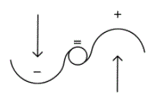
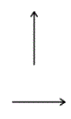

Беседа 3321 от 3877 · Беинса Дуно
Едно, две, три
„Отче наш“
Имате ли тема? („Имаме да напишем едно петцифрено число.“)
Пишете втория път върху превъзмогване. Дайте пример какво разбирате под превъзмогване. Реален пример дайте. Знаете какво значи реален пример? Да ви обясня. Когато човек е гладен, да му дадеш хляб, че като яде, той да е доволен, то е реален пример. Ако го занимаваш със сухари, с мухлясал хляб, то не е реално нещо. Реалното е, което съответства на нуждите. Пре какво значи на български? Пре значи подир. Ако няма падане, няма и превъзмогване. Работа трябва, много разумна работа. Допуснете, че вие сте ученик или сте някое дете. Някой път знаете ли защо плачат децата?
Пишете за втория път „Защо плачат децата.“
Аз ще ви помогна малко. Доста голямо мнение имат за себе си. Че не са обърнали внимание, цял въпрос вдигат. Те искат всички само за тях да мислят и затова плачат. Много честолюбиви са. У децата е тъй. То е най-малкото честолюбие вече. Най-добрият плод на честолюбието, който има цена, е плачът. Не обърнали внимание на него, унижили го, то ще си поплаче малко. Отплаща се с благородство. Кое иде след плача? Кряскането. Сега знаете ли, че не знаете да плачете на свят, нито да кряскате? Човек в себе си кряска, прави пакост на себе си, кряска си. Интересен е светът. Аз съм наблюдавал често модерните печки. Вратата се отворила, нажежена е, пък той, наместо да вземе дилафа, току изведнъж я отвори с ръка и се опари. Опасно е – той с два пръста отвори. Човек трябва да си има инструмент, да проверява нещата може ли да ги поправи, или не.
Каква е темата?
Числото едно какво означава? Или числото две в първа степен какво означава? Или три в първа степен? Едното в първа степен, то е един творчески принцип, то е киселина, която руши, раздробява нещата. В този принцип от неорганизирания свят създава организиран. Двете вече съгласува. То е още пт майстор. Едното ще издои нещата, ще ги тури в буталката. Двете ще вземе да ги чука, ще ги блъска, блъска, докато извади маслото, колкото има. Другото ще го изхвърли навън. Едното ще те тури в буталката, двете ще те избие и трите е айранът – каквото остане. Ще го изнесе да го продава в избрана форма.
Сега научно може да се обясни. Едно е киселина, две е основа, три е сол. Запример имате във водата два елемента. Самата вода какво е? Числото три. Сега според теорията водата сол ли е? Едно съединение на два елемента, кислород и водород. Каква е формулата? В съвременната химия са запознати със солта, която спира процеса на растенето. Но под думата три разбираме онзи процес, дето започва растенето. В три започва растенето. Христос казва: „Ако солта обезсолее – значи, ако в една сол няма растене – тази сол не струва за нищо.“ Вече се изхвърля да се тъпче. Трябва да мине през процеса, то е двете, и тогава да се пречисти. Тогава вече имате едно – дето започва процесът, пробуждане на съзнанието. Развиване на съзнанието е две, а три – вече съзнанието се е оформило.
Имате като резултат човешкия ум – едно, две е човешкото сърце, а три е човешкото тяло. Сега някои казвате: „Защо тялото е голямо?“ Всички предмети, които седят далече, са малки. Всички предмети, които седят наблизо, са големи. Слънцето има такава малка форма, то се намира на деветдесет и два милиона мили. Вие това слънце ще го гледате малко. Вярно ли е туй? На деветдесет и два милиона мили, такава е големината, но относителната му големина е такава, то така се вижда. Но ако започнете постепенно да се приближавате, туй слънце ще се увеличава. Не че слънцето става по-голямо, но става промяна. Вие се движите към слънцето, предметите стават по-големи. Някой път вие мислите, че имате знание. Понеже вие се приближавате при светлината, нещата ви стават ясни, мислите, че тогава знаете повече. Вечерно време нищо не знаете, в тъмното ходите. Като дойде светлината, веднага знаете. Някой път сте поставени на големи мъчнотии, на големи изпитания. Някой път мислите, че нищо не знаете. Вярно е, не знаете, защото нищо не виждате. Първокласен невежа си – тук се блъснеш, там се блъснеш. Щом изгрее слънцето, специалист си, учен си.
Сега при разбирането на предметите има три начина. Допуснете сега, че вие имате една семка. Разглеждате тази семка. Както и да я разглеждате, какво ще научите от семката? Имате една семка от круша или от ябълка. Ще разгледате тази семка и ще се запознаете с ония скрити сили. Туй е първото положение. Ще я посеете в земята – второто положение, ще расте семката. Като вземе да расте, този процес на растенето, той е две. Както се развива семката, имате познание. Най-после, какъв плод ще даде семката? То е три. Числото четири какво означава? Този плод вие ще го опитате. Тогава ще разберете, че семката е едно условие, за да се прояви дървото, а дървото е едно условие, за да се прояви плодът. Плодът е едно условие, за да го опитате вие. Процес е.
Сега, ако държите една семка пред вашите очи, всяка идея, всяко чувство, всяка постъпка трябва да мине през трите процеса. Да кажем, имате хрема, боледувате. Какво нещо е хремата? Проста работа. Хремата аз наричам почистване за Коледа. Щом дойде Коледа, ще се почисти. Дойде хремата, ще се почисти умът. Хремата е ден за почистване на ума. Ще работиш. Треската е почистване за Великден. То е за сърцето. Аз така гледам, че треската е за сърцето. Като дойде треската, температура има, пък сърцето здраво. Почистване за Великден е треската. След като дойде туй почистване, едно просветление се образува.
Научно сега как седи въпросът? Какво разбирате под потенциална сила на земята или кинетична сила на земята? Потенциална сила значи – парите са в касата. Кинетична сила значи – парите са в обръщение, вън от касата. Потенциална сила значи – земята милиони години е събирала. Кинетична сила значи – сега са в движение. Потенциалната сила се превръща в кинетична.
Често хората правят една погрешка. Мнозина питат не може ли без болест. Как? Като живееш редовно, трябва да разбираш законите на ума, на сърцето, на тялото. Болестите са изключение. Питат без сиромашия не може ли. Може. Като си учен човек, добър човек и силен човек, сиромашия няма да има. Но щом не си умен, щом не си добър, щом не си силен, сиромашията ще дойде. Казва: „Не може ли да не дойдат?“ Може. Пак същият закон. Щом си умен, мъчнотиите няма да дойдат. Щом не си умен, мъчнотиите ще дойдат. Щом си умен, трудът няма да дойде. Щом не си умен, трудът ще дойде. Щом си умен, работата ще дойде. Щом не си умен, работата няма да дойде. Сега работите се изменят, щом си умен и щом не си умен.
Имате единица, какво означава? Или имате плюс, или минус. Ако не си умен, мъчението ще дойде. Ако си умен, мъчението не идва, не те посещава. Мъчението е учен човек, то не търси умни хора. Щом му кажат умен, той е умен, не му трябват умни. Казва: „Този глупак, чакай да го видим.“ То търси глупавите хора, които са особен чешит. Като дойде, започне като умен човек да те изследва оттук-оттам. Туй научно изследване на мъчението го наричат [учение]: учен човек е, ще ти реже тялото. Лекарите вземат някое тяло, режат го с такива малки пинсети, отрежат го с ножчето, търсят някой нерв, раздробяват, държат бележка. Те си приказват отгоре над трупа, някой път пушат. Някой взел някой бут, някой – плешка, човешкото месо го режат. Някой път в Университета, в медицинския факултет, имат човешки тела и ги режат.
Та не е лесна работа да станеш лекар. Ако не можеш да режеш човешко месо, лекар не може да станеш. Трябва да бъдеш смел. Всичките лекари са смели на умрелите хора. Щом е умрял, смел е лекарят. Ако простите хора знаят какво правят лекарите, но не знаят. Като е лекар, знае вече, че той е рязал. Те мислят, че този човек, за да стане лекар, трябва да реже човешкото тяло. То е един метод сега, то е елементарен метод. За бъдеще лекарите не трябва да режат тялото. Всичките лекари ще бъдат ясновидци. Като дойде болният, ще разгледа какво има в тялото му. Ще гледа, без да отваря, как е направено. Няма защо да го реже. Материята ще бъде прозрачна. Човешкото тяло е оцветено. Природата, за да скрие нещо, го оцветява. Тялото, като умре някой, ще го обезцветяват, ще стане прозрачно. Тогава ще можем да видим всичко. Тогава – лесна работа. Но може би ще минат векове, докато стане това.
Как бихте обичали: човек да бъде оцветен или прозрачен? По-добре е да е оцветен. Имате една единица от червения цвят. Какво ще направите с нея? Или имате единица от портокаления цвят, или единица от зеления цвят, или от жълтия цвят. Защо цветовете в тази форма, както ги имаме, те са минуси? Когато желаеш червения цвят, показва, че имаш един недоимък. Щом имаш изобилие от червения цвят, тогава ти започваш да избягваш червения цвят. Докато си в негативната форма, ти го обичаш. Щом добиеш повече от цвета, отколкото трябва, ти вече не се интересуваш. Тогава повръщаш цвета назад. Сега, ако бяхте в училище, какво бихте поискали най-първо от природата? Децата, които отиват в отделенията, учениците, които отиват в прогимназията, които отиват в гимназията, студентите, мязат си. Най-първо, детето трябва да го запишат. Гимназистът, и той иска да го запишат. Онзи в университета, и той трябва да се запише.
Казвам, най-първо трябва да имаш достъп, достъп до нещата. Ако някой гледа единицата, тази единица е само една черта. Имате две, отличава се. Това е вече резултат. Тройката, и тя е резултат. В този смисъл единицата е сила, която дава условия ти да работиш и да се развиваш. Единицата е първият подтик на човека да работи или пробуждане на човешкото съзнание. Когато се говори за Бога – [за] онези, които не разбират идеята – [Бог е] онази Единица, онази Първа Причина, която дава подтик на човешкото съзнание да живее и в процеса на живота да се учим, да получим първия подтик. Казвате: „Как да вярваме в Бога?“ Подтикът в нас в каквото и да е направление, то е единицата, то е Божественото. Божественото е, което подига човека. Първата единица е киселина, то е подтикът, силата, деятелност. Две аз уподобявам на онази мътилка в буталото. Трябва да влезе в мътилката.
Сега вземете, че имате посято семе. Ако вие ги съжалявате да не страдат, бихте ли имали цвят? Казвате: „Няма да ги хвърлим в земята, ще ги държим.“ Те няма да страдат, но и цветове няма да имат. Ако искате да видите техните цветове, в земята трябва да ги посеете. Сега от ваше гледище какво разбирате под думата страдание? Или болка имате. Да допуснем, че вие имате известна форма, известна дебелина на пръста – нормално състояние, нямате никаква болка в пръстите. Ако обаче в пръстите по един механичен начин се роди желание да има повече кръв, отколкото трябва, ще се създаде едно болезнено състояние. Всякога, ако ударите пръстите си, да спре ходът на капилярните съдове, започва да се набира и се образува едно болезнено състояние. Навсякъде законът е един и същ: когато задържиш нещо в себе си, без да го туриш на работа, ще причини болка. Природата не търпи покой. Малко трябва да го употребиш. Щом не го употребиш, чакаш, след време ще се образува едно болезнено състояние.
Да допуснем, че по два начина се образуват болките. Можеш да туриш пръста в огъня, да го изгориш, ще имаш болезнено състояние. Но може да ходиш на екскурзия при двайсет и пет–трийсет градуса студ, да ти измръзнат пръстите, пак ще имаш болка. Сега по какво се отличава изгарянето, по какво се отличава измръзването? Имаме два начина, не може да се освободим от страданието. Има едно страдание, което произтича от топлината отвън, от явната топлина. Има друго страдание, което произтича от скритата топлина. Студът е скрита топлина.
Сега правилото е: ти може да страдаш по два начина. Направиш една погрешка, която е явна – страдаш. Направиш една погрешка, която не е явна – пак страдаш. В първия случай страдаш, понеже хората знаят. Във втория случай никой не знае, пак страдаш. Дали погрешката е явна, или тайна, страдание ще имаш. Страданието е вече един език на природата, че ти не трябва да правиш погрешки.
Сега да обясня. Представете си, че имате ключа „сол“. Имате „до“, което има шестнайсет трептения, а според други – трийсет и две трептения. Повишаваме „до“ с половин тон. Колко трептения ще има? Или понижаваме „до“. Колко трептения ще има? С колко трептения го понижаваш? Колко трептения има половин тон?
Най-често музикантите се разстройват, понеже не разбират философията на музиката. Тук преди две седмици слушам някой свири в салона, свири едно парче, не зная от кого, не ми дойде на ума. Най-после намирам музиканта – Шопен. Питам тази сестра защо свири Шопен. Тя след две седмици се разболя. На един здрав човек, който не знае какво да прави, Шопен е на място, отлично хубаво лекарство. Сега това не ви влиза в работа. Това са по-тънки работи, които имат връзка.
Много може да се говори, за да се разбере. Но като понижиш „до“, с какво се е намалило? Запример аз щом чуя тона „до“, показва, че от едно пасивно състояние трябва да излезете. Ако вземеш вярно тона „до“, каквато и мъчнотия да имате, може да направите един малък опит, може да имаш една мъчнотия, може да имаш главоболие, може да имаш температура, каквото и да е, ако вие вземете вярно тона, веднага ще стане една промяна във вас. Значи от туй пасивно състояние сте излезли и сте влезли в активно състояние. Това е „до“. За мене „ре“ е – щом вземеш „ре“, ти ще тръгнеш в правата посока на движение. Ако посоката ти е вярна, вярно ще вземеш „ре“. Ако посоката на твоето движение не е вярна, не може да вземеш вярно „ре“. Законът е същият. Ако посоката на твоята мисъл е вярна, ще вземеш вярно „ре“. Ако посоката на твоите чувства е вярна, ще вземеш вярно „ре“. Посоката на движението ако е вярна, ще вземеш вярно „ре“. Казвам, музиката има практично приложение. Провери дали мисълта ти е вярна.
После искам да зная дали туй, което искам да постигна, ще го постигна. Тогава пея вече. Ако вземеш вярно „ми“, ще постигнеш. Ако не вземеш вярно, ти не можеш да постигнеш. Искаш да знаеш дали ще спечелиш. Ако вземеш вярно „фа“, ще спечелиш. Ако не вземеш вярно, ти ще се опропастиш.
Максими са това. Аз така зная. За мене цяла наука е да изпея гамата, тази стълбица от седем тона. Имаме всичките елементи за постижение. Ако аз бих направил една музикална школа, най-малко тази стълбица три години трябва да я уча, само за да [се] вземат вярно тоновете. Опити, опити… Другата работа след три години ще бъде добре дошла. Семената само се саждат, те сами ще израстат. Всичко от само себе си ще става. То е за насърчение, то не е закон.
За бъдеще, когато хората разберат закона на Божията любов, тогава ще бъде лесно. Човек, който има разбиране, работите лесно стават. Сега в какво седи повишението, в какво седи понижението на „до“? Или вземеш половин тон по-горе. Ако кажем че „до“ има трийсет и две трептения, колко ще бъде повишението? Понижението ще бъде шестнайсет, повишението колко ще бъде? („Четирийсет и осем.“) Добре, това в пианото е направено. Всякога, когато повишавате, е в по-рядка среда. Когато го понижавате е в по-гъста среда. Да допуснем, че вие една ябълка я разделяте на шестнайсет парчета, друга на трийсет и две. В какво седи разликата? Колко взема на кокошката да разреши въпроса на „до“, едно яйце докато измъти? Взема ѝ двайсет и един ден. Те са двайсет и едно трептения, докато се измътят яйцата. Тази кокошка, за която вие мислите, че е глупава, тя знае. По закона на трептенията тя постоянно бърка яйцата, тя измъща яйцата. Понеже, като ги обръща, тя разбира, че за да се измътят яйцата, трябва да ги обръща, [иначе] няма да се измътят. Тя по няколко пъти ги размества, туй го прави по инстинкт. Тя постоянно вика на пиленцата. На двайсет и първия ден започва силно да вика. Пиленцата чуват. Казва: „Малко усилие с клюна, почукайте навън.“ Образува се едно течение между мисълта на кокошката и мисълта на пиленцата. Те започват да си издават гагичката навън, главата. Сега не зная тия, които изкуствено ги измътват, какво правят. Онези, които се измътват от хората, се различават от онези, които кокошката ги мъти. Разбира се, голямата работа е свършена.
Та казвам, един тон за да вземеш в първоначално отношение, трябва да имаш условия, за да вземеш вярно тона. Всякога, когато вземеш тона, да си доволен. Като вземеш тона, да станеш доволен. Та казвам, сега идваме към големината на тия предмети. Колкото се приближаваш към някой предмет, колкото повече знания имаме, разбира се, толкоз предметът става по-ясен – силата, която съдържа в себе си, става достъпна за нас.
Защото в какво седи благото на един лекар? Значи лекарят става господар на болестите. Той като се яви при болестите, всичките болести му стават на крак, козируват му. Тъй трябва да бъде, като дойде лекарят. Ако всичките болести стават, когато дойде лекарят, той е лекар. Що е здравето? Като дойде лекарят, болестите ще станат на крак. На болестта ще ѝ дадеш уволнителен билет, достатъчно се е занимавала с болния. Здравето, това са новобранци. Тогава ще издадеш една заповед, че новобранците трябват. В природата има негативна сила. Всичките ония сили, които отнемат естествената топлина на човека, произвеждат болестите. Всичките ония сили, които внасят топлина в човека, носят здраве. Тъй щото някой път попаднеш в негативната сила, отнеме ти се топлината – тогава дойде болезненото състояние. Тогава дойдеш в онази област на положителните сили, които са в хармония с тебе – ти внасяш здравето. В туй отношение това е наука за здравето. Човек трябва да е в хармония с природата и в умствено, и в духовно отношение. Духовното отношение го вземам по отношение на сърцето. Във физическо отношение – по отношение на тялото. Когато човек има връзка с трите свята: с положителните сили на умствения свят, с положителните сили на духовния и с [положителните сили на] физическия свят, то е здравето на човека, здравословното състояние.
Тогава в природата имате черния цвят, той е негативен. Белият цвят, той е положителен. Щом започва да ви е черно вътре, имате негативни сили. Трябва да вземете други мерки. Те на друг език говорят. Ти една негативна сила може да я употребиш, като разбираш езика. Нещата за какво трябва да се употребят? Човек, като легне да спи, понеже отива в духовния свят, черният цвят е потребен за почивка. Когато се пресилиш, трябва ти почивка. За почивка е този цвят. Ако ти не го употребиш за почивка, тогава ще се удвои работата. Щом се удвои тази работа, вече се изтощава този човек. Сега някои искат повече почивка, отколкото им трябва. Някои искат повече работа, отколкото им трябва. Трябва равновесие – да знаеш колко да почиваш и колко да работиш. Колко сън трябва на човека? Седем или осем часа. Колкото време ти трябва да почиваш, толкова време ти трябва и да работиш – да допуснем осем часа. Две по осем – шестнайсет часа, до двайсет и четири – още осем часа. Тия осем часа за какво ще ги употребиш? Определено е времето. Ако по седем часа почивате и работите, три по седем – двайсет и едно, остават още три часа свободни.
Ние при сегашния живот се намираме в едно голямо еднообразие. Един човек иска да бъде учен човек, иска да бъде богат човек, силен иска да бъде. Ред желания не знае къде да ги употреби.
Сега всички болести усилват вярата на хората. Когато хората се разболяват, то е за усилване на вярата. Непременно трябва да пратите болест, за да се усили вярата. Онези, най-невярващите хора, които не вярват в нищо, щом дойде лекарят, казват: „Този е учен човек, свършил.“ Лекарят казва: „Десет капки ще вземеш сутрин, обед и вечер.“ И той брои: една, две, три. После гледа на часовник точно. Щом е здрав, казва: „Мене не ми трябват.“ Не се подчинява. Щом е болен вече, каквото му кажат, слуша. Тъй както вярва човек като болен, ако вярваше като здрав, не щеше да се разболява. По същия начин трябва да знаеш колко вода да пиеш. Защото и при препиването на вода може да се разболееш. Българите често страдат от стомашно разстройство. Той става вечерно време, българите имат такива кепчета, вземе, напие се със студена вода. Сутринта стане, не е добре. Казва: „Урочасах. Не зная какво ми стана.“ Той изпил през нощта едно–две кепчета. Казвам, не пийте студена вода. Казва: „Приятен огън имам.“ Ял кисело.
Казвам, пийте топла вода. Става ли? Казвам, по малко ще пиеш вода, хубава вода, да се асимилира. Другояче остава в стомаха дълго време, поглъща топлината. След туй се образуват тия лошите състояния. Защото и в чувствата може да имате такива състояния. Когато някой път човек се засрами, почервенее лицето. По някой път, като се уплаши, пожълтее, побледнее. Ако прекарате човек в две състояния, едното положително, в което се образува топлина, имате плюс, другото отрицателно, имате минус, какъв резултат ще даде? Ако дойде пак минус, те се уравновесяват. После пак дойде минус. По някой път иде минус, минус, минус. Туй вече е едно болезнено състояние. Някой път имате плюс, плюс, плюс – имате едно здравословно състояние. Имате енергия, не знаете къде да турите енергията си. Та в сегашния живот енергията не е определена.
Тук наскоро дойде един господин заедно с жена си. Оставили се близо четири години, напуснал я. Сега пак се сприятелили наново. Той седи при мене и ми казва: „Имам един дявол в мене. Много отмъстителен човек съм, искам да си отмъстя. Един дявол имам. Много голяма пакост ми направи.“ Но главата при ушите е изпъкнала от двете страни, там се заражда излишна енергия. Зависи от тази енергия, която се събужда. Тази енергия иска да си отмъсти. Тя е свързана с неговия малък мозък. Събужда се. Сега казвате: „Дойде просветление в ума ми.“ Казвам: „Дръж ума нагоре. Не снемай ума надолу. Мисли за хубавите работи.“ По същия начин и неговата другарка – тази енергия и тя трябва да я тури в правата посока. И в него има едно съзнание. После гледам му главата горе от ушите до темето. Тази мярка е много малка – няма морален устой. Ето какво наричам морален устой: отвориш касата, гледаш, имаш пет хиляди лева. Трябват ти десет хиляди лева, значи няма да платиш. Ти имаш да плащаш петнайсет хиляди лева. Когато говорим за морален устой, разбираме един капитал, че всякога, при каквато и мъчнотия да е, да отвориш касата и да плащаш. Трябва да имаш сила. Някой път имаме желание да извършим нещо. Нямаме морална сила. Трябва да имаме сила. Моралната сила е един капитал в човека, той не трябва да се разпилява. Хиляди мъчнотии може да дойдат. Като имаш този капитал, веднага се спреш, всичките хора трябва да простят.
Сега мнозина от вас се безпокоят. От какво? Безпокоите се от студа. Има защо да се безпокоите. Безпокоите се от вятъра, безпокоите се от отношението на хората. Среща ви някой човек. Като ви погледне, като че ви полее със студен душ. Срещне ви някой, така ви погледне, вие се смущавате. Срещне ви някой, изведнъж не ви погледне, но си обърне гърба. Като си обърне гърба, като че с някой душ ви е полял.
Та при сегашния живот трябва да се учите да хармонизирате силите си. Като излезеш от къщи, да знаеш коя улица да вземеш. Трябва да бъдеш предвидлив. Като тръгнеш, да тръгнеш по онази улица, дето ще срещнеш много малко пакост, дето ще срещнеш повече блага. Значи в тази улица ще срещнеш повече добри хора, отколкото лоши. Добри хора – разбираш тези, с които си в хармония. Те ти предават нещо, обмяна ще стане между тебе и тях.
Някой път може да срещнеш някой човек, не те поздравил. Но между хората по един таен начин става една обмяна. Умните хора, като излязат, знаят откъде да минат, да стане обмяната правилно. Ако минеш по улица, дето обмяната не е правилна, връщаш се недоволен. И в учението, навсякъде обмяната да става правилно. Ще дойдеш в хармония с добрите хора, ще имаш висок дух, може да работиш. Някой път дойдеш, изгубиш настроението си.
Та първото нещо, човек като излиза сутрин, трябва да има нещо, от което да се тонира, да дойде в хармония и целия ден да се хармонира с окръжаващата среда. То е вече наука. Ако искате, един ден да направим един опит. Един ден може да ви пратим през София, ще ви кажа през къде да минете, през кои улици, и всеки ще донесе резултата. Някой път като останем съвършено без работа и няма какво да правим, ще направим този опит. Има доста материал, събран в цялата научна област.
За бъдеще лесно ще стане. Ще имате цветенце в една саксийка – учен сте, каквото и да сте – ще имате по едно цветенце в саксийка, с което да хармонирате. Ще го полеете, ще го погледнете, то ще бъде като един талисман. Пък има цветя, които имат съвсем противоположни трептения. Не всички цветя са така хармонични. Имате някое камъче хубаво, което хармонира с вас. После, вечерно време като излезете, да намерите по небето някоя звезда, че като я погледнеш, да ти стане приятно. Не всички звезди произвеждат едно действие. Туй е вярно, понеже разни звезди имат различна светлина. На някои звезди цветът е в хармония с вас, произвеждат приятни впечатления. Обикновено някои хора, като говорите, произвеждат освежаващо впечатление, разположени са. Като срещнете човек, с когото си хармонирате, работата върви. Всеки един човек е благо за някого. Защо трябва да излезеш? Трябва да излезеш, понеже си едно благо. Като се срещнете, на тия хора ти ще им предадеш нещо и те ще ти предадат нещо. Трябва да излезеш, за да стане една обмяна между теб и тях. По същия начин, ако мислите, трябва да дойдат мисли, които са хармонични, известни чувства да дойдат в сърцето, с които си в хармония. Всичко туй допринася. По този начин животът вече разумно ще се гради. Тогава ще се осмисли. При сегашните условия е много механизиран. Ние очакваме нещо по кой начин ще дойде. Трябва да се трудиш. Но разумният труд носи самообразование.

Повишените тонове сега имат връзка с месечината. Повишените тонове направиха връзка някога със слънцето. Мозъкът не може да възприема направо слънчевата енергия, трансформатор е месечината. Повишените тонове чрез месечината възприема, понижените – чрез земята. Затуй понижените тонове носят топлина, повишените тонове носят хладина. Понижените тонове според мене са носили скръб. Понижен е, понеже е скърбен. Той е в гъстата материя. Той пее, за да се урегулира. Той като попее – не че е понижен – той взема тия тонове, да се нагоди според условията. Взема понижения тон, за да се оглади в средата, в която живее.
Вземете „ре“ повишено и понижено. Как ще изпеете например: „Студен вятър духаше“? Как ще го започнем, мажорно или минорно? Или: „Топъл вятър духаше“? В даден случай студът ни прави по-активни, топлината ни прави по-разположени. Сега как бихте определили студа и топлината? Как ще го изпеете? В топлото ти трябва да дадеш един подтик отдолу нагоре, за да преодолееш.

В топлината ти трябва да излезеш от едно положение в друго. Топло ти е, трябва да излезеш из стаята навън или трябва да отвориш прозореца. Казваш, трябва да си смениш състоянието. Или пък някой път искаш да знаеш дали си разбрал някоя дума. Ако може да я изпееш хубаво, ти си разбрал думата. В българите частицата лю е за учудване, но с него започва любовта. Българинът винаги, като дойде любовта, той се учудва какво нещо е.
Сега вие какво си представяте, какво нещо е любовта? Как си представяте любовта? Каква форма ще дадете на любовта? Не само вашето разбиране, но всички други как ще я разберат? Представете си, че един човек е беден. Един го обича, даде му пари. То е вече едно понятие за любовта. Представете си една млада мома. Младото момче дойде, даде ѝ една шапка – той я обича. Един студент, скъсал го професорът. След това професорът му е турил добра бележка, снизходителен е. Как ще си представи студентът любовта? Младото момиче как ще си представи любовта? Бедният взе парите, как ще си представи любовта? Техните понятия не са едни и същи.
Любовта е с много лица, многолична е тя. Любовта при цветята е цвете, при животните е животно, при хората любовта е хора, при птиците любовта е птица, при водата вода е. Всички форми взема, веднага взема техните форми, за да я разберат. Любовта е единствената сила, която слиза до нашето положение и си заминава. Тя не очаква. Никой не знае образът ѝ какъв е. Не очаквайте да се запознаете с нея. Тя ти услужи, взема твоето положение и си замине. Най-разбраното нещо в света е любовта и най-неразбраното нещо е тя. Две качества: неразбраното е любовта и най-разбраното е любовта. Неразбрана е в туй отношение е, че никой не я е разбрал. Тя дойде, остави богатството, казва: „Направи на този човек добро.“ Ти веднага казваш, че не го обичаш. Някой път ти остави нещо и ти направиш доброто. Понеже ти го разбираш, ти си съгласен с нея. В едно отношение влизаш в стълкновение с нея, в друго – в единение. Тя всякога дава. Ти в едно отношение си готов да дадеш, а в другото не си готов. Когато обичаш, готов си да дадеш. Когато не обичаш, не си готов да дадеш. Тя всякога дава. Щом ти дава, и ти не даваш, тогава носиш лоши последствия, страдаш. Даде ти нещо, казва: „Дай на другите.“ Ти не даваш. Тогава страдаш. Тази любов наричам любов на страдания. Любовта всеки ден ще те посети поне по веднъж. Всеки ден тя ти оставя по трийсет килограма. За десет дена това са триста килограма. Ти няма кому да ги дадеш, на твоя гръб ще ги тури, тя слуги не търси. Ти имаш торба. Отвориш торбата, туриш ги. Тя казва: „Ще дадеш.“ Втори път като дойде, пак дава. Тя никога не взема. Пак ще ти тури. Вследствие на това идат страданията на човека.
Когато имате работа с любовта, каквото ви каже, изпълнете го. Давайте, за да ви се даде. Тя ще ви дава и последното даване ще ви причини страдание. В любовта са най-големите страдания. Не са много големи, но всички хора страдат от преизобилие. Знаеш колко са смешни сега. Аз по някой път сравнявам хората на любовта. Те си имат един цвят и час по час го поливат. Ти имаш едно цвете, поливаш го. После, други хиляди цветя има, които трябва да поливаш. И своето, и всички трябва да поливаш без разлика. Който върви по закона на любовта, трябва да действа съобразно с нея, защото утре тя ще дойде, носи голям товар трийсет и два килограма. Сто дена по трийсет и две – три хиляди и двеста килограма на гърба ти. Ти какво ще правиш? Затуй всички се заемете в закона на любовта да работите, понеже, ако не работите, тя ще ви създаде най-големите трудности. Ако работите, ще имате капитал, няма какво да се безпокоите. (Учителят пее: „Топъл си ти“.)
Вие как бихте го изпели? Т-то показва, че имаш усилия да преодоляваш. О-то показва: имаш усилия. В П-то имате обратния процес.
Онези от вас, които сте запознати с тоновете, може да знаете трептенията на „до“.
„Само светлият път на мъдростта води към истината. В истината е скрит животът.“
Десета лекция на младежкия клас
27 декември 1940 г., петък, 5 ч. сутринта
София – Изгрев